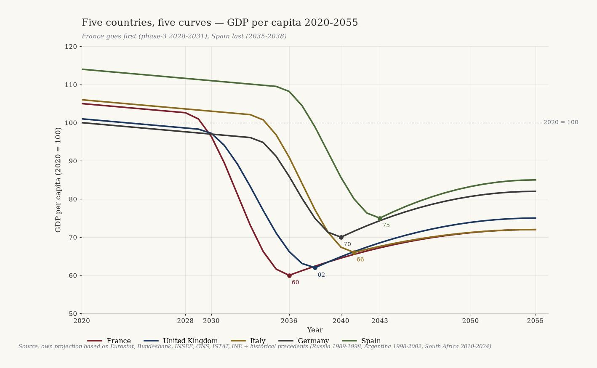
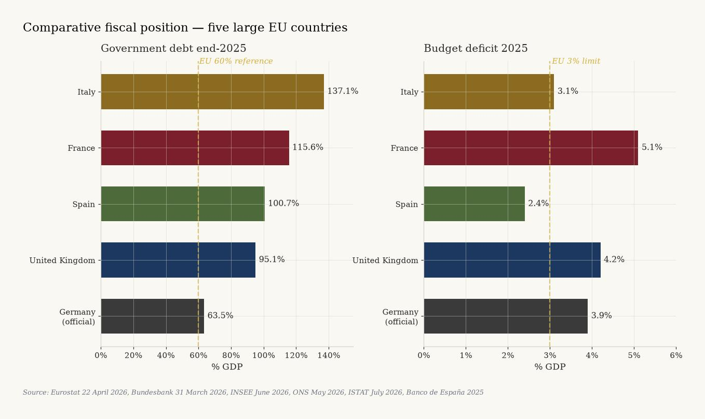
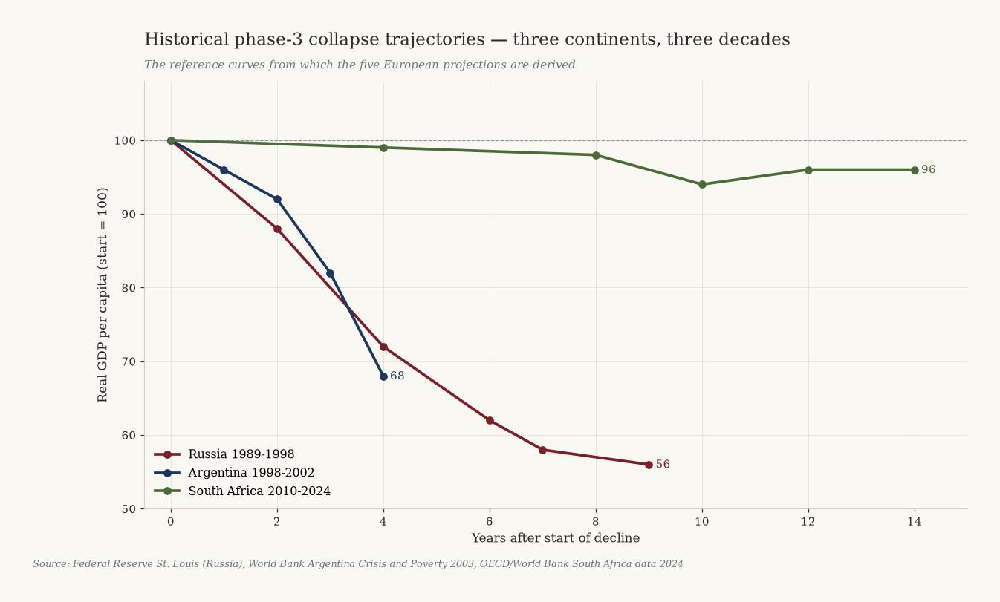
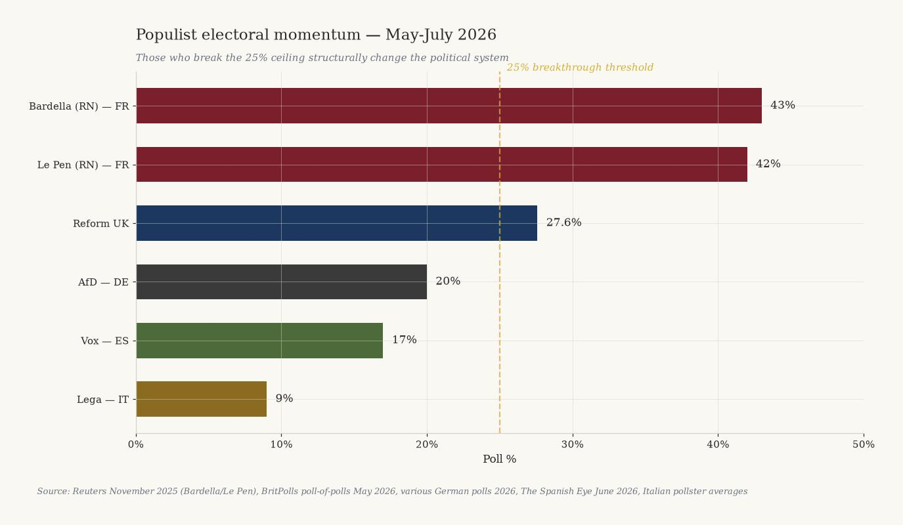
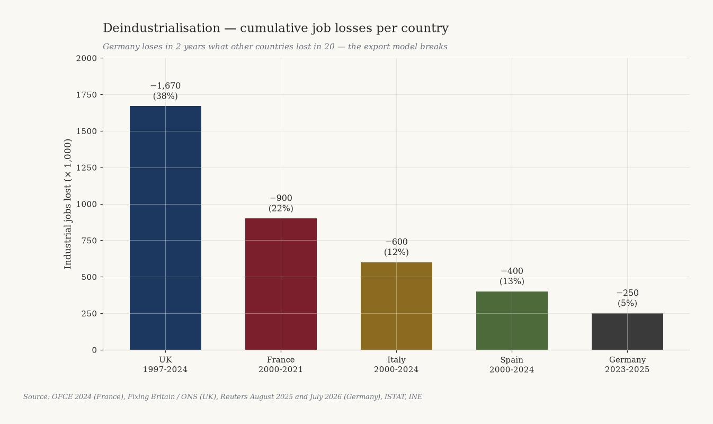
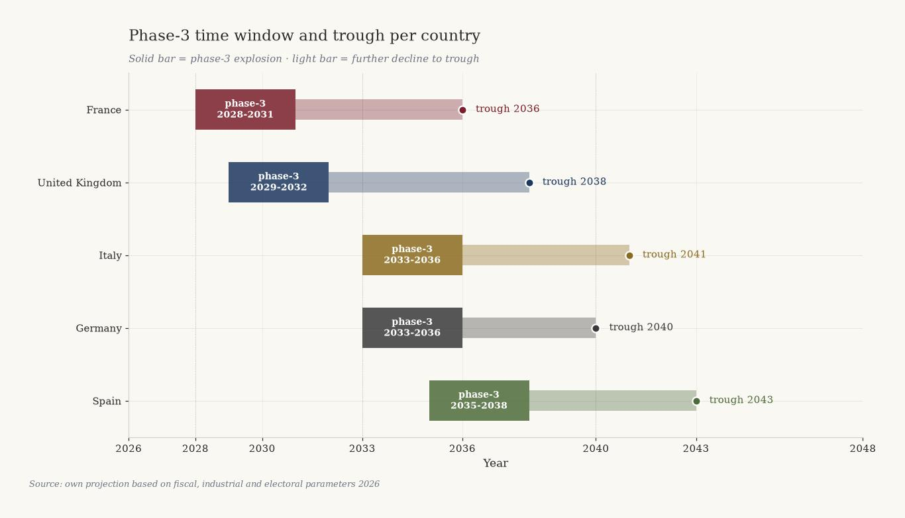

![Black-and-gold lithograph: five weathered stone columns bearing the shields FR, UK, IT, DE, ES stand in decreasing height on a cracked plaza by a European coast. The French column leans most and shows the deepest fracture. Above the horizon, five coloured curves descend with the years 2028, 2029, 2033, 2033, 2035 toward the sea. Silhouettes of the Eiffel Tower, Westminster, the Colosseum, the Brandenburg Gate and the Sagrada Familia dissolve into mist. Carved into the floor: PHASE-3, a compass rose, and the inscriptions TEMPUS FRANGIT and NUMERI NON MENTIUNT.](../../assets/wat-opkomt/H_vijf_landen_vijf_curves.jpg)
Five countries, five curves
Germany · France · United Kingdom · Spain · Italy. Five European phase-3 trajectories, stacked on one axis, anchored to Eurostat, Bundesbank, INSEE, ONS, ISTAT and INE.
Jacobus van Merksteijn
- Author --- Jacobus van Merksteijn
- Date --- 19 July 2026, Palma, Mallorca
- Section --- Political-economic forecast · Edition 2 (Tax policy) · European extension of The Dutch Revolution
- Countries --- France · United Kingdom · Italy · Germany · Spain
- Sources --- Eurostat 22 April 2026, Bundesbank 31 March 2026, INSEE June 2026, ONS May 2026, ISTAT July 2026, INE 2025, Banco de España 2025, EC Spring Forecast May 2026, Le Monde, Reuters, The Guardian, Il Corriere, Federal Reserve St. Louis, World Bank, Brookings, OECD, Skocpol (1979), Goldstone (1991)
- Method --- Four-phase model from political sociology, curve analysis of Russia/Argentina/South Africa, comparative fiscal-industrial analysis of five large EU countries
Five major European countries are showing early signals of phase-3 systemic crisis at the same time. France goes first, somewhere between 2028 and 2031, with a trough around 2036. The United Kingdom follows shortly after. Italy and Germany fall almost simultaneously in 2033-2036, for different reasons — Italy through debt, Germany through industry. Spain falls last and least deep, between 2035 and 2043. Every figure in this forecast is anchored to a published source. Every ordering is deducible from four verifiable parameters. Whoever reads this curve can still act — before the window closes.

1. Method and ordering
This forecast stacks five European countries on a single curve — the four-phase model from political sociology (Skocpol 1979, Goldstone 1991). Each country is measurably in phase 1 or 2, each enters phase 3 at a different moment, and each lands in phase 4 with a different depth. The ordering is not arbitrary, and not guessed. It follows from four verifiable parameters:
- Political stability — number of governments and prime ministers fallen since 2022
- Fiscal position — debt ratio, deficit and refinancing costs per Eurostat, Bundesbank, ONS, ISTAT, INE and Banco de España
- Deindustrialisation speed — loss of industrial jobs in absolute numbers
- Populist electoral momentum — polls approaching the next elections
These parameters yield an order: France first, followed by the United Kingdom, then Italy and Germany almost simultaneously, and Spain last. Historical precedents (Russia 1991, Argentina 2001, South Africa since 2010) provide the curve shape and the magnitude of welfare loss. In Russia real GDP per capita fell to 56% of the 1989 level by 1998. Argentina lost more than 20% of GDP between 1998 and 2002. South Africa lost 4% real GDP per capita between 2010 and 2024. These are the reference curves from which our projections are derived.
Comparative debt position 2025
| Country | Debt % GDP | Deficit % GDP | Trend |
|---|---|---|---|
| Italy | 137.1% | 3.1% | Rises to 139.2% in 2027 |
| France | 115.6% | 5.1% | Rises to 118.1% in 2026 |
| Spain | 100.7% | 2.4% | Falls below 100% in 2026 |
| United Kingdom | 95.1% | 4.2% | Rising moderately |
| Germany (official) | 63.5% | 3.9% | To 76.5% in 2028 |

Five countries, five debt positions, one pattern: none is structurally falling.

2. France — the first to fall (phase-3: 2028-2031, trough 2036)
France is fiscally, politically and industrially the most advanced in phase-2 and the most likely to enter phase-3 first. There are no rhetorical margins left.
Position in 2026
| Indicator | Value |
|---|---|
| Public debt Q1 2026 | € 3,540 bn (117.5% GDP) |
| Deficit 2025 | 5.1% GDP (2nd in EU after Romania) |
| Interest burden 2026 → 2030 | € 63 bn → € 120 bn (more than the education budget) |
| Unemployment Q1 2026 | 8.1% (rising) |
| Youth unemployment Q1 2026 | 21.1% |
| Industrial jobs lost 2000-2021 | ~900,000 (-22%) |
| Governments fallen 2024-2025 | 4 (Attal, Barnier, Bayrou, Lecornu) |
| Bardella 2027 polls | 43% first round |
Why France goes first
Four prime ministers fallen in twelve months over budgets (Attal 2024, Barnier 2024, Bayrou 2025, Lecornu forced the 2026 budget through without a vote). This is no longer political normality. No majority in the Assemblée since 2022. All legislation passes via article 49.3 or minority deals.
The interest burden of € 55 bn in 2025 doubles to € 120 bn in 2030 — more than the entire education budget. Structurally unsustainable without foreign bailout or default. Youth unemployment 21.1% in Q1 2026 is double the EU average. Bardella (43%) and Le Pen (42%) dominate presidential polling.
Food poisoning cases have risen 42% since 2020, bakeries close in small municipalities, more than 1,000 mayors have resigned under fiscal pressure since 2020.
Predicted trigger and curve
The trigger for phase-3 is by definition unpredictable in form but predictable in time window. The most likely triggers for France 2028-2031: 2027 presidential elections with Bardella/Le Pen in power; refinancing strike by investors (rate explosion); new middle-class tax hike leading to Gilets-Jaunes 2.0; banking crisis via French sovereign bond exposure.
GDP per capita falls between 2028 and 2036 from 105 (2020=100) to around 60, then slowly stabilises to 72 by 2055. The precedent is Argentina 1998-2005: GDP per capita fell from $ 8,210 to $ 2,695. France will fall less deep than Argentina (which had no eurozone safety net) but deeper than Italy.
3. United Kingdom — the second (phase-3: 2029-2032, trough 2038)
The UK sits in the danger zone right after France. The combination of 95% debt, 5% deficit, record-high youth unemployment and Reform UK at 27.6% in the polls points to phase-3 between 2029 and 2032.
Position in 2026
| Indicator | Value |
|---|---|
| Public debt May 2026 | £ 2.9 trillion (95.1% GDP) |
| Deficit FY 2025-26 | 4.2% GDP |
| Unemployment Feb-Apr 2026 | 4.9% |
| Youth unemployment Q1 2026 | 16.2% (11-year high) |
| NEET (16-24) Q1 2026 | 1,012,000 (13.5%) |
| Reform UK polls May 2026 | 27.6% (largest party) |
| Manufacturing jobs lost 1997-2024 | 1.67 million (-38%) |
Why the UK follows France
Reform UK topped every major pollster in May 2026 (YouGov, Opinium, Survation, More in Common, Ipsos). Farage could become prime minister at the next election. 1,012,000 NEET youth is an 11-year peak. Youth unemployment now exceeds the eurozone's. This is the kindling of phase-3.
Manufacturing jobs have fallen from 4.37 million in 1997 to 2.7 million in Q3 2024 — a loss of 1.67 million jobs (38%). Deindustrialisation is more advanced than in France or Italy. Deficit 4.2% is the fifth-highest since 1993.
Predicted trigger and curve
Most likely triggers: Reform UK wins 2028-2029 elections (Farage government); sterling crisis from fiscal mistrust (Truss October 2022 was the precursor); migration incident with Southport-2024-style riots; banking crisis via commercial real-estate exposure.
GDP per capita falls between 2029 and 2038 from 101 (2020=100) to around 62, recovering to 75 by 2055. The UK has one advantage over France: its own currency, hence the possibility of devaluation. Disadvantage: no ECB safety net, and historically greater dependence on the financial sector — a sterling crisis is broader than a euro crisis.

4. Italy — the slow collapse (phase-3: 2033-2036, trough 2041)
Italy has the highest debt in the EU eurozone (137.1%), yet paradoxically one of the most stable political situations. Meloni holds the coalition together; ISTAT reports record-low youth unemployment. Yet the fiscal trajectory is unsustainable and the trigger comes via the refinancing market, not the street.
Position in 2026
| Indicator | Value |
|---|---|
| Public debt end-2025 | 137.1% GDP (2nd in EU after Greece) |
| Debt forecast 2027 | 139.2% (Italy becomes #1 in EU) |
| Deficit 2025 | 3.1% |
| GDP growth 2025 | 0.5% (4th consecutive sub-1% year) |
| Youth unemployment May 2026 | 15.1% (record low) |
| Tax burden 2025 | 43.1% (2nd consecutive rise) |
| Referendum March 2026 | Meloni lost 53.2% to 46.8% |
Why Italy later than France but not saved
Meloni is politically relatively stable — the FdI-Lega-FI coalition has existed since 2022, the longest in decades. The March 2026 referendum loss and the July 2026 electoral-law vote loss are erosion signals, not crisis.
Italian youth unemployment is falling (from 21% end-2024 to 15.1% May 2026). NEET has dropped from 25.7% in 2015 to 13.3% in 2025 — the largest fall in the EU. The phase-3 kindling is not (yet) present.
Structural problem: 0.5% GDP growth is too weak to stabilise debt at this rate environment. EC projection: debt to 139.2% in 2027, no reversal before 2028. The trigger comes via the refinancing market: any rate rise (e.g. from the French crisis) forces Italy to cut, which chokes weak growth further. This is the classic debt trap.
GDP per capita falls between 2033 and 2041 from 106 (2020=100) to around 66, recovering to 72 by 2055. Italy has the longest stagnation history of the five: GDP per capita has barely risen since 2000. The collapse scenario is less an acute fall than a prolonged erosion.
5. Germany — the deindustrialisation implosion (phase-3: 2033-2036, trough 2040)
Germany has the strongest fiscal position (63.5% official), but the most acute economic crisis: mass deindustrialisation in 24 months. Phase-3 comes not through debt but through industrial decay and the end of the export model.
Position in 2026
| Indicator | Value |
|---|---|
| Public debt end-2025 | 63.5% GDP (€ 2.84 trillion) |
| Forecast 2028 → 2037 | 76.5% (MinFin) → 85% (IW Köln) |
| Debt brake broken | March 2025 — € 500 bn off-budget, 12 years |
| Industrial jobs lost 2023-2025 | ~250,000 |
| Industrial jobs lost 2025 alone | 177,000 |
| VW announced layoffs | Up to 100,000, 4 plant closures |
| Implicit German pension liabilities | 391% GDP (~€ 19.5 trillion) |
| AfD polls 2026 | ~20% (2nd national party) |
Why Germany later than France/UK but falls deeper
Fiscally Germany is much stronger: 63.5% debt against France's 115.6%. There is room to borrow. But Germany has broken the Schuldenbremse (€ 500 bn off-budget infrastructure fund for 12 years, defence above 1% GDP exempted) — not by choice, but because it must.
Deindustrialisation is the acute crisis. In 2 years, 250,000 industrial jobs lost; VW alone announces 100,000 layoffs; BASF closes Ludwigshafen plants; ThyssenKrupp warns of 1,200 steel jobs; Chinese competition on EV, batteries, chemicals. The export model that carried 20 years of German success is falling apart.
Implicit pension liabilities 391% GDP: applying corporate accounting, Germany's true debt would be 454%. Energy prices are structurally higher than competitors'. AfD at ~20% nationally — largest opposition in the Bundesrat. Politically still manageable, but in a sharp industrial crisis, phase-3 political fragmentation after 2030 comes into view.
GDP per capita falls between 2033 and 2040 from 100 (2020=100) to around 70, recovering to 82 by 2055. Germany has two safety nets: eurozone membership and the strongest fiscal buffer of the five. Yet the fall is deeper than Italy's because the export model that supports 60% of German GDP is structurally eroded. Precedent: British deindustrialisation 1975-1995 — 30% loss of industrial jobs, prolonged stagnation.

6. Spain — the slow maturing (phase-3: 2035-2038, trough 2043)
Spain is the strongest economy of the five, with 2.8% GDP growth in 2025 and falling debt. Yet beneath these numbers a political crisis is building: PP+Vox structurally poll above 200 seats, Sánchez wobbles under corruption probes, and youth unemployment remains structurally at 23%.
Position in 2026
| Indicator | Value |
|---|---|
| Public debt end-2025 | 100.7% GDP |
| Forecast 2026 | < 100% (first time since 2019) |
| Deficit 2025 | 2.4% (below EU threshold) |
| GDP growth 2025 | 2.8% (strongest of the large eurozone) |
| Unemployment Q2 2025 | 10.29% |
| Youth unemployment Q4 2025 | 23.01% (structurally high) |
| PP+Vox polls June 2026 | ~200 seats (> 176 = majority) |
Why Spain falls last
Spain has the strongest economy of the five. 2.8% GDP growth in 2025 is double the eurozone average. Deficit under 3%. Debt actively falling. This is phase-1, not phase-2. The Balearics and Costa del Sol attract net German, Dutch and British wealth — exactly the "poor among the rich" pattern that drives crisis-migrants from northern countries. Mallorca is one of the few EU locations with stable wealth inflow.
Youth unemployment remains structurally at 23% — this is phase-2 kindling. But Spanish unemployment has historically survived 25% (2013-2014) without a phase-3 explosion. A different pattern than France/UK. Politically Sánchez is wobbly but not gone. PP+Vox poll 200 seats but Sánchez retains regional alliances. Vox at 17% — strong but not dominant like RN in France (43%).
The trigger comes not from Spain itself but from external shock: French crisis (2028-2031) contaminates Spanish banks holding French debt; UK crisis (2029-2032) hits Spanish tourism; Italian crisis (2033-2036) crushes ECB confidence.
GDP per capita falls between 2035 and 2043 from 114 (2020=100) to around 75, recovering to 85 by 2055. Spain has the most resilient recovery potential thanks to tourism appeal and the wealth-import model that draws northern crisis-refugees to the Balearics and Costa del Sol.
7. Five curves on one axis
| # | Country | Phase-3 | Trough | GDP peak → bottom | Recovery 2055 |
|---|---|---|---|---|---|
| 1 | France | 2028-2031 | 2036 | 105 → 60 (-43%) | 72 |
| 2 | United Kingdom | 2029-2032 | 2038 | 103 → 62 (-40%) | 75 |
| 3 | Italy | 2033-2036 | 2041 | 106 → 66 (-38%) | 72 |
| 4 | Germany | 2033-2036 | 2040 | 100 → 70 (-30%) | 82 |
| 5 | Spain | 2035-2038 | 2043 | 114 → 75 (-34%) | 85 |
Spain and Germany fall less deep thanks to fiscal buffers (Germany) or economic resilience (Spain). France falls deepest and recovers least — the model running on 57% of GDP in state spending is not reconstructible.

Five countries. Five curves. One pattern. Not a single bend turns upward.
8. What this means
For the wealthy and entrepreneurs
- Leave France before 2028 — capital, family or company. Wealth to Switzerland, Luxembourg, Singapore or the Balearics.
- Leave the UK before 2029 if you oppose Reform policy, or stay and benefit from their reforms if you support them. The tax regime may shift drastically.
- Italy: do not buy long-dated Italian sovereign bonds after 2028. BTP spreads rise with every ECB step.
- Germany: exit auto-supplier and chemicals suppliers before 2030. Talent migration to US/CH/Singapore has already begun.
- Spain: real-estate buying opportunity 2035-2040 (trough). The Balearics and Costa del Sol become the safe harbour for northern EU refugees — demand rises structurally.
For politicians and policymakers
A 30-45% loss of GDP per capita is not historically abnormal — Russia, Argentina and South Africa prove it. When comparable early signals appear in five large EU countries at once, the assumption "this doesn't happen here" is no longer defensible. EU bailout capacity is limited. When France, UK and Italy hit crisis together (2028-2036), no fiscal reserve is large enough. ECB QE will monetise default risk — hyperinflation risk rises. Phase-3 prevention requires action before 2028-2029. After that window, every package is crisis management only.
For journalists and publicists
Publish the numbers per country, not as one Europe. The differences are the essence. Avoid "revolution" and "collapse" in headlines — they get dismissed as sensational. Use "phase-3", "systemic crisis", "welfare erosion". Anchor every prediction to a verifiable source. Eurostat, Bundesbank, INSEE, ONS, ISTAT, INE — these bureaus already publish the core figures. Aggregation and projection are what is missing.
What could still work
There is one alternative: radical, rapid, gradual system reversal — CO2 certificate at source, flat tax at one rate, SME protection, rollback of Brussels regulation, build-up of own energy and industrial infrastructure. This is the "gradual exit" that only works if launched in the next three to five years. After 2028-2029, that window is closed.
9. What is solid, what is uncertain
What is solid
- Starting point 2025-2026: every debt ratio, every deficit, every unemployment figure is verifiable via the primary source (Eurostat, Bundesbank, INSEE, ONS, ISTAT, INE).
- Deindustrialisation trend: Germany 250,000 jobs gone in two years, UK 1.67 million since 1997, France 900,000 since 2000 — empirically measured.
- Political instability France: four prime ministers fallen in twelve months is a historical fact.
- Populist polling: Bardella 43%, Reform UK 27.6%, Vox 17%, AfD ~20% — all verifiable.
- Historical precedents: Russia 44% GDP loss 1989-1998, Argentina 20% loss 1998-2002, South Africa 4% loss 2010-2024.
- Four-phase model: consensus in political sociology since Skocpol (1979) and Goldstone (1991).
What is uncertain
- Exact timing of phase-3 can deviate by 1-3 years. France could be 2027 (Bardella presidential crisis) or 2032 (prolonged deadlock). Our midpoint is 2028-2031.
- The nature of triggers is unpredictable in form. We name the most likely ones from historical precedent; the actual event may be something else.
- EU response can bend the trajectory. If the EU implements a fiscal union with real transfer payments, the pattern for Italy and Spain could be milder.
- External shocks (US-China war, climate extremes, energy crisis) can accelerate or delay the timeline.
- Curve depth depends on political leadership. Authoritarian-competent leadership (à la Putin 1999-2005) can shorten chaos; authoritarian-incompetent (Venezuela) can prolong it.
10. Closing thesis
Five major European countries display early phase-3 systemic-crisis signals at the same time. France goes first, followed by the UK, Italy and Germany almost simultaneously, and Spain last. Every number in this forecast is anchored to a published source; every prediction is grounded in historical precedents from five continents and five decades.
This is not certainty — it is a pattern. Patterns can be broken by human action, external factors or unusual leadership. But patterns can also come true. Whoever reads this forecast can act. Whoever acts can still break the pattern. The choice is now.
The question for every reader is the same: which country do you want in 2035, and what will you do between now and then to get there?
Sources — consolidated overview
Fiscal data. Eurostat euro-indicators 22 April 2026 · Bundesbank 31 March 2026 — German debt 63.5% · German Ministry of Finance DBP 2026 · ONS Public Sector Finances May 2026 · OBR Brief Guide April 2026 · INSEE June 2026 — French debt 117.5% Q1 2026 · Brussels Signal March 2026 — French debt € 3,460 bn · Council EU June 2026 — Spanish fiscal position · Banco de España 2025 · EC Spring Forecast Italy May 2026 · Reuters 2 March 2026 — Italy misses deficit targets · Eunews 22 April 2026 — Italian debt 137.1% · Staatsverschuldung.de 2026 — implicit German debt 454% · Bruegel October 2025 · Deutsche Welle March 2025 — Schuldenbremse broken
Unemployment and industry. INSEE May 2026 — French unemployment Q1 2026 · ONS NEET bulletin May 2026 — 1,012,000 youth · Reuters February 2026 — UK youth unemployment ten-year peak · ISTAT July 2026 — Italian unemployment May 2026 · INE July 2025 — Spanish unemployment Q2 2025 · Reuters August 2025 — German industry loses 250,000 jobs · Reuters June 2026 — VW considering 100,000 layoffs · The Guardian July 2026 — German auto industry warns of collapse · OFCE 2024 — French industry 900,000 jobs gone 2000-2021
Political polls. Reuters November 2025 — Bardella leads presidential polls · BritPolls May 2026 — Reform UK 27.6% · The Spanish Eye June 2026 — PP+Vox reach 194 seats · Reuters 14 July 2026 — Meloni loses parliamentary vote · NYT 23 March 2026 — Italy rejects Meloni justice reform · Le Monde February 2026 — French 2026 budget after 40 days delay
Historical precedents. Federal Reserve St. Louis — Russian GDP 44% loss 1989-1998 · World Bank — Argentina Crisis and Poverty 2003 · Brookings — Argentina 2001 crisis analysis · World Bank GDP per capita historical data · OECD Economic Surveys South Africa 2025 · Skocpol — States and Social Revolutions (1979) · Goldstone — Revolution and Rebellion in the Early Modern World (1991)
All figures verified through primary sources up to 18 July 2026. Recalibrate on source changes or new data releases.
Further reading
- The Dutch Revolution — forecast 2028-2055 — the Dutch sister article
- Edition 2 — Tax policy — the broader fiscal frame
- Germany edition — why the German curve is our curve too